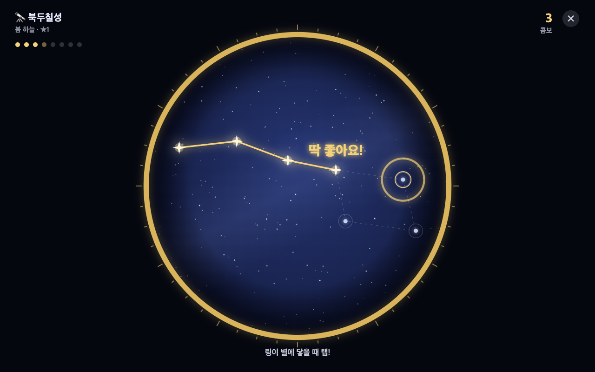
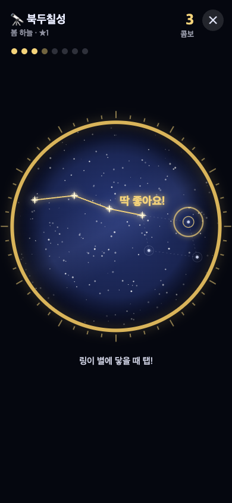
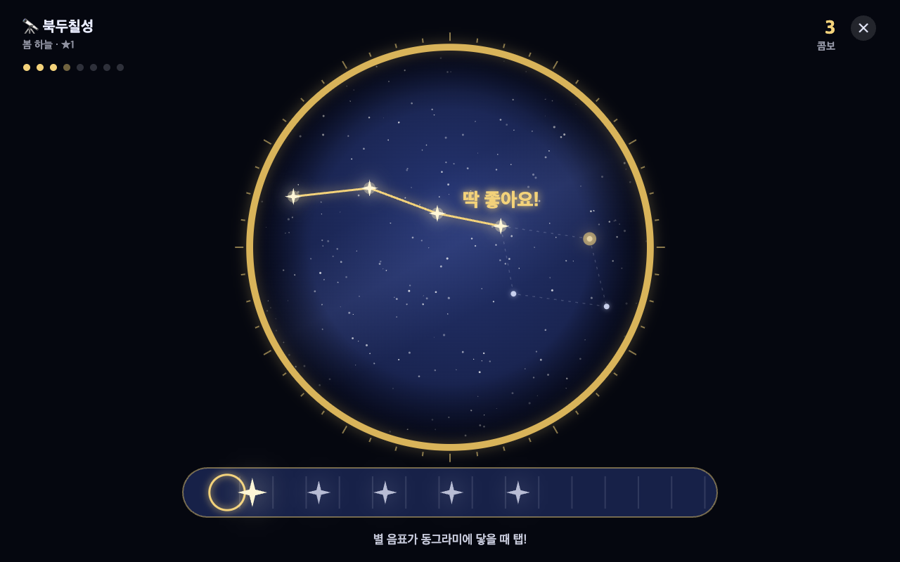
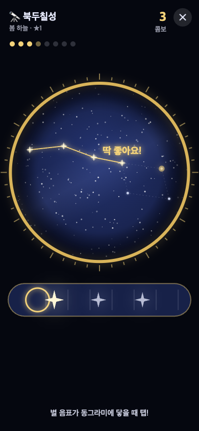
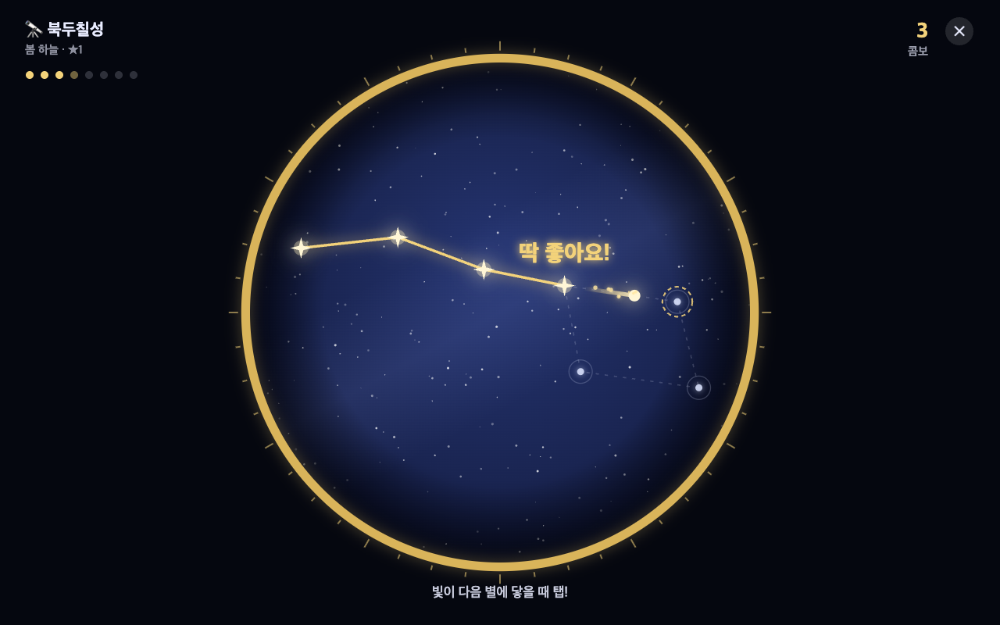
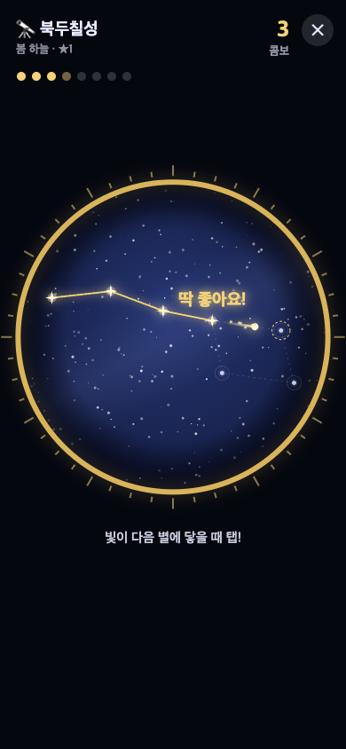

다음 별 위로 링이 줄어들고, 별에 닿는 순간 탭 → 선이 이어짐.
눈이 하늘 한 곳에만 있으면 돼서 가장 직관적


렌즈 아래 줄에서 별 음표가 흘러와 동그라미에 닿을 때 탭.
다음 박자가 미리 보여 리듬게임 느낌이 제일 강함


방금 이은 별에서 빛이 다음 별로 날아가고, 도착할 때 탭.
선을 '그리는' 느낌이 가장 강함, 거리마다 박자가 달라짐

